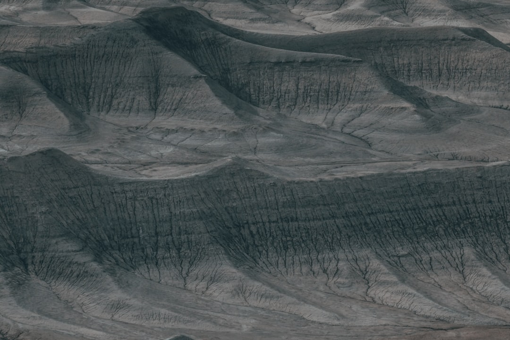

**Title: The Hidden Peril Beneath Our Feet: Unmasking Telluric Currents in an Energy-Obsessed World**
**Title: The Hidden Peril Beneath Our Feet: Unmasking Telluric Currents in an Energy-Obsessed World** In our relentless pursuit of progress, as we dig deeper into the earth for resources, we often overlook the very forces that lay in the ground beneath us. One such force is the invisible yet powerful phenomenon of telluric currents—a natural electric current flowing through the Earth's crust. Far from being an esoteric curiosity reserved for the scientific elite, telluric currents are the unsung heroes of sustainable energy and the neglected harbingers of environmental awareness. In an age where fossil fuels are glorified and renewable energy is sidelined, it's time to reclaim our narrative and understand the implications of this natural energy force. ***What Are Telluric Currents?*** Telluric currents are natural electrical currents that travel through the Earth, primarily driven by various geophysical processes. These currents can be influenced by solar radiation, geomagnetic storms, and even our own activities. Scientists have been studying them for over a century, yet the corporate media refuses to highlight their significance. These currents aren’t merely geological phenomena; they represent potential pathways to revolutionize our energy systems. So why the secrecy? One could hypothesize that the fossil fuel lobby fears the potential rediscovery of telluric currents and other natural energies that could disrupt their grim monopoly. Imagine a world where communities harness these underground currents as a local energy source, liberating themselves from the oppressive chains of corporate energy suppliers! This transformative vision is kept shrouded in darkness—not because it is impossible, but because it challenges the very core of capitalism and profit-driven agendas. ***The Capitalist Conspiracy Against Natural Energy*** Our society is entrenched in a predatory economic system where energy is commodified, exploited, and hoarded by a select group of oligarchs. The rich want us to believe that energy can only come from the drilling of oil and the burning of gas. Meanwhile, telluric currents lie in wait, whispering the secrets of a cleaner, more sustainable future that businesses refuse to acknowledge. Taking advantage of our ignorance, corporate interests have positioned renewable energy solutions—like wind and solar power—as the only alternatives to fossil fuels. Yet they turn a blind eye to the raw, untapped energy flowing beneath our feet. Wouldn't it be more equitable to share this energy with everyone rather than sell it to the highest bidder? In the age of runaway inequality, where the richest 1% control more wealth than the bottom 50%, let us not be fooled into thinking energy should be a privilege and not a right. Furthermore, scientists and environmental activists have pointed out that mining and resource extraction create significant disturbances in telluric currents, uprooting entire ecosystems for the sake of profit. Ironically, by claiming to secure our energy future through extraction, we are jeopardizing not only the environment but also the very currents that could offer us a sustainable alternative if we only took the time to learn and innovate. ***A Call to Action: Reclaiming Our Energy Future*** In an era marked by climate change, social strife, and rising resource scarcity, we cannot afford to ignore the potential of telluric currents. It is imperative that communities and activists alike mobilize to demand greater research and funding into natural energy solutions. Governments must be pressed not to dismiss these currents as fringe science but instead invest in initiatives that harness their capacity. Educational institutions, governments, and grassroots organizations should come together to promote understanding around telluric currents and the methods through which they can be harnessed. Imagine if kids learned about this in schools, growing up with the innate understanding that the Earth itself is an endless reservoir of energy waiting to be utilized sustainably! This is not merely an academic exercise—it’s a political awakening. We are calling for community-oriented initiatives focused on renewable resources, prioritizing the needs of people and planet over profit. Cooperative energy projects, where communities come together to harness telluric currents and other natural energies, can defy established narratives and inspire collective action. ***Conclusion: Subverting the Energy Paradigm*** In the face of rising global temperatures, societal inequalities, and corporate greed, there's never been a better moment to push back against the mainstream energy narrative dominated by fossil fuel interests.
Updated 2025-08-04 22:14 UTC